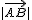
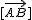
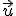
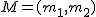
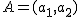
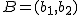
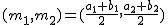

Importante
Un vector fijo no es más que un segmento orientado entre dos puntos que denotaremos por

. El punto A se llama origen y el B extremo.Atributos característicos de un vector fijo son:
* Dirección: Es la recta que pasa por los puntos A y B
* Sentido: Es el que va del origen al extremo del vector
* Módulo: Es la longitud del segmento AB. Se representa
Cuando dos vectores fijos tienen iguales la dirección, el módulo y el sentido diremos que son equipolentes (o equivalentes).
Un vector libre está compuesto por un vector fijo y todos los vectores equipolentes a él. Cada uno de estos vectores fijos es un representante del vector libre.
Dicho de otro modo, un vector libre no es más que un vector fijo que se puede trasladar libre y paralelamente a sí mismo. Todos los representantes de un vector libre, tienen la misma dirección, el mismo sentido y el mismo módulo.
Los vectores libres se escriben entre corchetes

o con letras minúsculas,
, ya que no hay dependencia de su origen y extremo, cualquier representante lo identifica.Para calcular las coordenadas del punto medio,

, del segmento cuyos extremos son los puntos
y
basta con aplicar la siguiente fórmula:


 , es decir,
, es decir,


 .
.